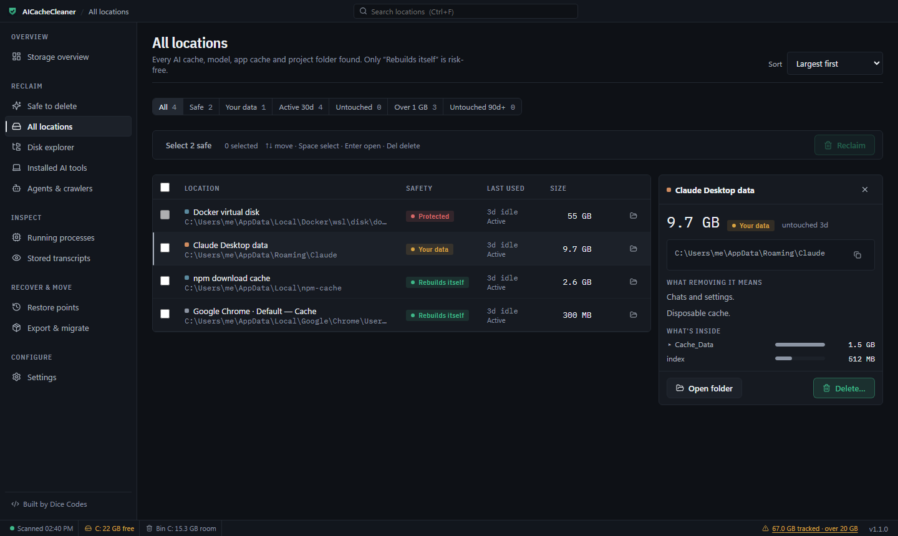
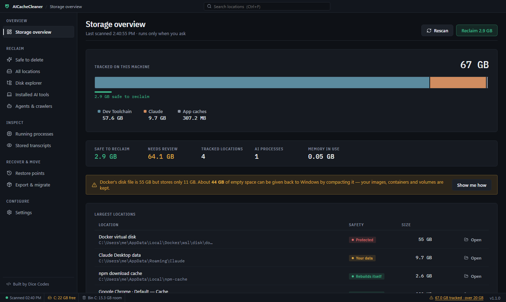
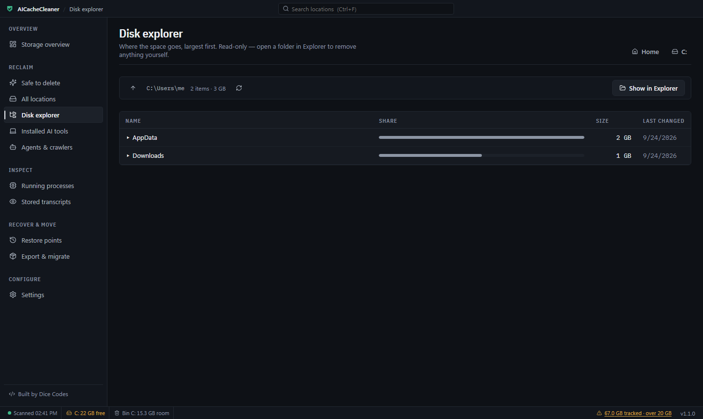

Free AI cache cleaner for Windows — reclaim the gigabytes your AI tools leave behind
See exactly how much disk space Claude, Cursor, Antigravity, Ollama, Docker and Chrome's on-device AI are using, and safely clear the caches that rebuild themselves. Every delete goes to the Recycle Bin.

Everything AI stores on your PC, in one place
AI coding tools, local models and Electron apps quietly fill your C: drive. AICacheCleaner finds all of it, sizes it exactly, and tells you what is safe to remove.
Clear Claude Desktop & Claude Code cache
Web, code and GPU caches under %APPDATA%\Claude and session storage in ~/.claude, separated from chats and settings.
Cursor, Antigravity & Windsurf storage
Editor caches, extension hosts and agent workspaces — including Google Antigravity's .gemini folder — measured and rated.
Ollama, Hugging Face & LM Studio models
Every downloaded model listed on its own, with the exact ollama rm command, so you remove one 7 GB model instead of a whole folder.
Shrink the Docker Desktop WSL disk
docker_data.vhdx never shrinks on its own. See how much of it is empty space and get the exact compact steps — images and volumes are kept.
Remove Chrome's 4 GB Gemini Nano model
Chrome's OptGuideOnDeviceModel folder, with the official switch that stops it coming back.
npm, pip, pnpm, Yarn, uv & Composer caches
Package caches are usually the largest safe win on a developer's disk. Clean them by folder or with each tool's own command.
Every Chromium app's cache, automatically
Chrome, Edge, Brave, VS Code, Slack, Discord, WhatsApp and any Electron app — found by their profile layout, not a hand-kept list.
Export AI chat history per project
Move a project and every Claude and Cursor conversation about it to a new PC in one zip, with no size limit.
Disk explorer & Windows cleanup steps
See where space goes on any drive, largest first, plus guided steps for the hibernation file, Windows Update leftovers and old downloads.
Built so you can't delete the wrong thing
Every location gets one of three ratings, and every delete is recoverable — or it doesn't happen.
- Deletes go to the Recycle Bin, after a confirmation that shows what's inside.
- If Windows would delete something permanently — too big for the Recycle Bin, a USB or network drive, or a selection that would push your older recycled files out — the delete is refused.
- Folders with code, git repositories, databases or logins are locked.
- One-click restore points move files back out of the Recycle Bin.
- Runs 100% offline. Nothing is uploaded.


Feels like a native Windows tool
Native title bar and dialogs, a status bar with free space and Recycle Bin room, right-click menus and full keyboard control: Ctrl+F search, ↑/↓ move, Space select, Enter open, Delete delete (it still asks), Ctrl+R rescan. A full scan of 147 locations takes about 30 seconds.
AICacheCleaner vs CCleaner, BleachBit and manual cleanup
| Need | AICacheCleaner | General cleaners | By hand |
|---|---|---|---|
| Knows Claude, Cursor, Antigravity, Ollama folders | Yes, rated per folder | Mostly no | If you know where to look |
| Separates caches from chats and settings | Yes | No | Error-prone |
| Docker WSL disk space | Measures trapped space, gives compact steps | No | Manual diskpart |
| Refuses unrecoverable deletes | Yes | No | No |
| Exports AI chat history per project | Yes | No | No |
| Price | Free, open source | Free / paid | Free |
Frequently asked questions
How do I clear the Claude Desktop cache on Windows?
Claude Desktop keeps its web, code and GPU caches under %APPDATA%\Claude (Cache, Code Cache, GPUCache). AICacheCleaner lists them as "Rebuilds itself" and moves them to the Recycle Bin after you confirm; chats and settings in the same folder are never included.
Why is Docker Desktop using so much disk space, and how do I shrink docker_data.vhdx?
Docker Desktop stores everything in %LOCALAPPDATA%\Docker\wsl\disk\docker_data.vhdx, which never shrinks by itself. Run docker system prune -a, quit Docker Desktop, run wsl --shutdown, then compact the disk with diskpart as administrator. AICacheCleaner shows how much empty space is trapped and gives the exact commands; images, containers and volumes are kept.
What is the 4 GB OptGuideOnDeviceModel folder in Chrome?
It's Chrome's on-device AI model (Gemini Nano). Deleting it only helps until Chrome downloads it again — turn off "On-device AI" in Chrome Settings → System and Chrome removes it itself.
Where are Ollama models stored on Windows, and how do I remove one?
In %USERPROFILE%\.ollama\models (or the folder set in OLLAMA_MODELS). Models share data files, so remove one with ollama rm <model> instead of deleting files — AICacheCleaner lists each model with its size and the exact command.
Is it safe to delete the npm, pip or pnpm cache?
Yes. Package caches are re-downloaded on the next install and installed projects are untouched. Use the tool's own command (npm cache clean --force, pip cache purge, pnpm store prune) or move the folder to the Recycle Bin.
How do I move my Claude or Cursor chat history to a new computer?
Export & migrate matches Claude sessions and Cursor workspaces to their project folder and exports the project plus its AI conversations as one zip, with no size limit.
How much disk space can I get back?
On the development machine: 11.5 GB of rebuildable caches, 44.8 GB of empty space inside the Docker disk, and 18 GB of guided Windows items (hibernation file, update leftovers, driver downloads).
Can it delete my files permanently by mistake?
No. Deletes go to the Recycle Bin after a confirmation, and anything Windows would delete permanently instead is refused. Code, git repositories, databases and login files are locked.
Does it send my data anywhere?
No. It runs 100% offline. The only network request is an optional update check against GitHub releases.